Pintura
Conoce artistas que utilizan el color, las formas y diferentes técnicas para expresar sus ideas y perspectivas.
Conocer artistasMUJERES - ARTE - MÉXICO
Un espacio dedicado a reconocer el talento y la trayectoria de mujeres mexicanas dentro de diferentes disciplinas artísticas.
DESCUBRE SU ARTEConoce a mujeres mexicanas que han dejado huella en diferentes áreas del arte.
Conoce artistas que utilizan el color, las formas y diferentes técnicas para expresar sus ideas y perspectivas.
Conocer artistasEscritoras mexicanas que transforman experiencias, historias e ideas en palabras.
Conocer artistasMujeres que utilizan la fotografía para documentar, interpretar y construir nuevas miradas.
Conocer artistasDirectoras mexicanas que cuentan historias desde diferentes perspectivas.
Conocer artistasCantantes y compositoras mexicanas que convierten emociones e historias en música.
Conocer artistasMujeres mexicanas que han explorado el arte contemporáneo a través de diferentes técnicas.
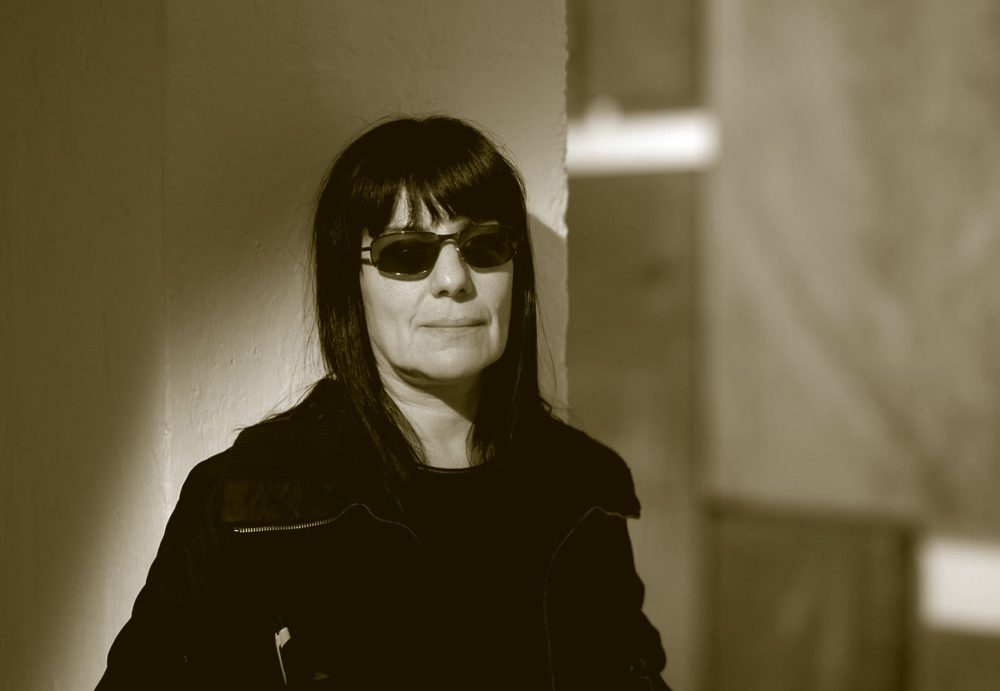
Artista mexicana cuya obra aborda temas sociales, memoria, violencia y problemáticas de la sociedad.
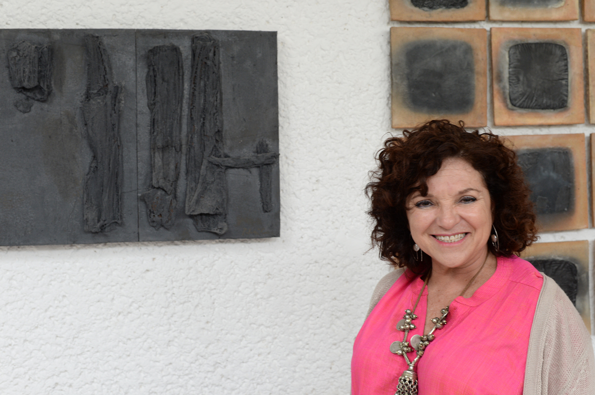
Artista mexicana que trabaja con materiales, formas y elementos relacionados con el espacio.
Escritoras mexicanas que convierten las palabras en historias, reflexiones y nuevas perspectivas.
Escritora mexicana reconocida por su narrativa y por abordar temas sociales y contemporáneos.
Escritora mexicana cuya obra explora diferentes problemáticas sociales y humanas.
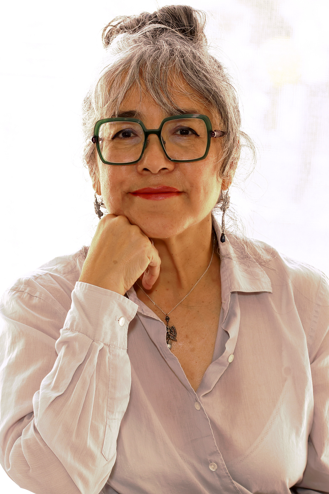
Escritora mexicana que combina narrativa, investigación y memoria en su obra.
Miradas femeninas que capturan historias, personas, espacios y momentos.

Fotógrafa mexicana reconocida por su mirada documental y artística sobre México.
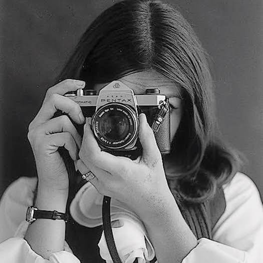
Fotógrafa mexicana cuyo trabajo exploró diferentes aspectos de la cultura y sociedad.
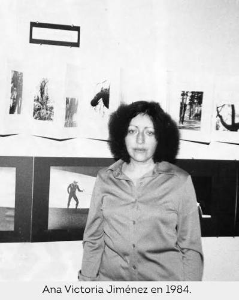
Fotógrafa y artista mexicana vinculada con la documentación y el arte feminista.
Directoras mexicanas que llevan sus historias a la pantalla.
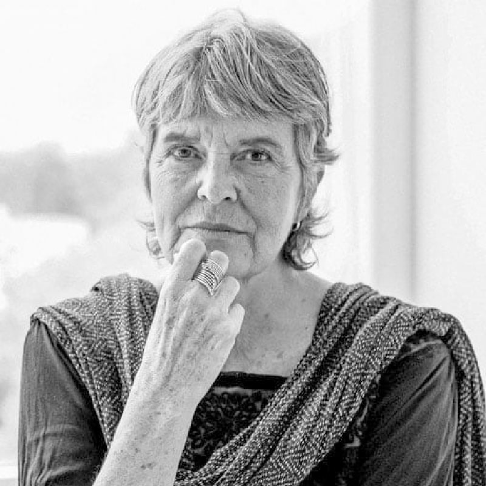
Directora y guionista mexicana reconocida por su trabajo cinematográfico.
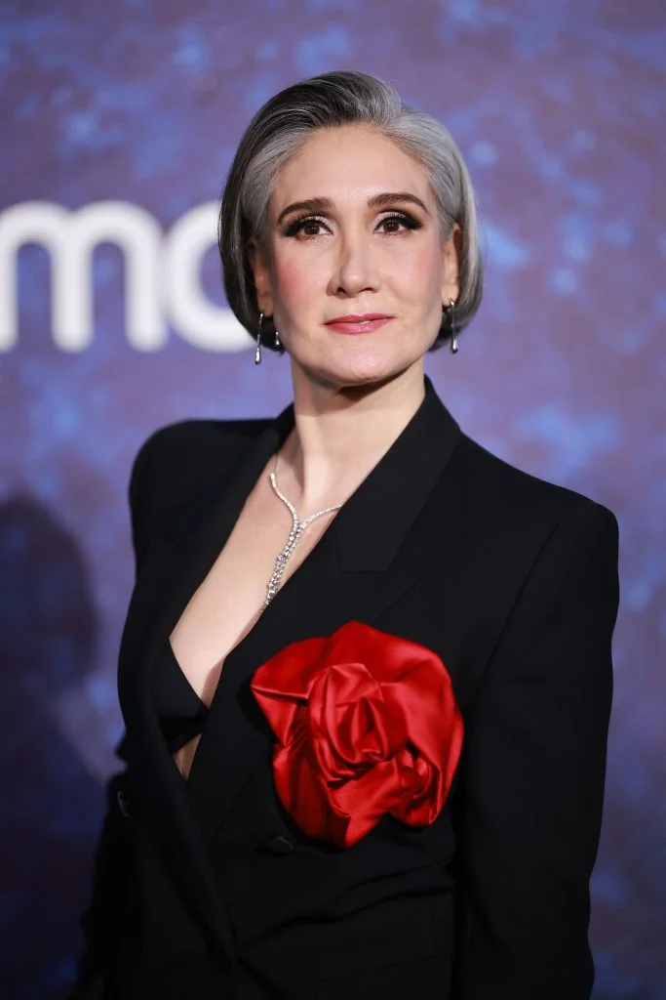
Cineasta mexicana que ha trabajado principalmente en los géneros de drama, fantasía y terror.
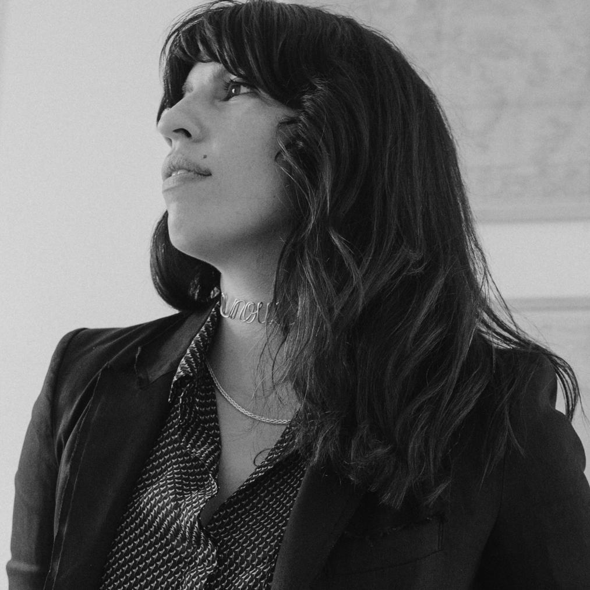
Directora y guionista mexicana con una trayectoria dentro del cine contemporáneo.
Cantantes y compositoras mexicanas que utilizan la música como una forma de expresión.
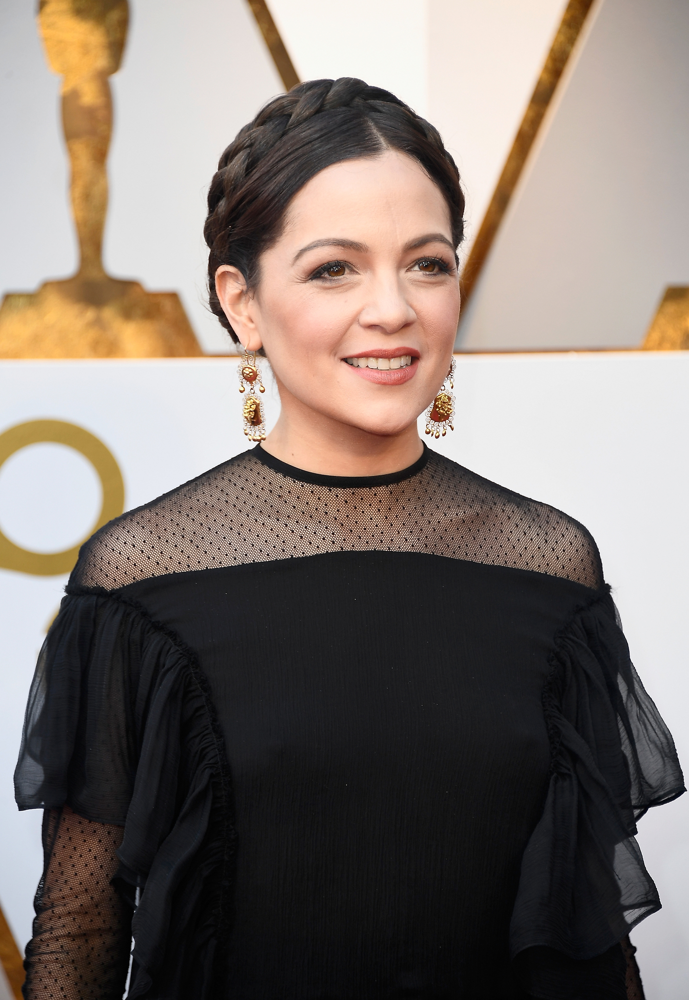
Cantante y compositora mexicana cuya música incorpora diferentes elementos de la tradición musical latinoamericana.
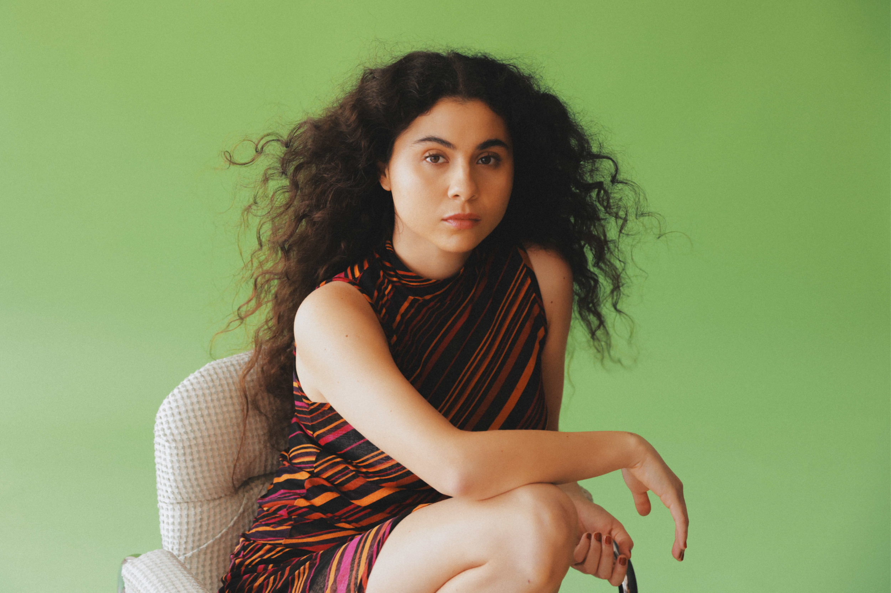
Cantante y compositora mexicana conocida por combinar elementos del folk y la música latinoamericana.
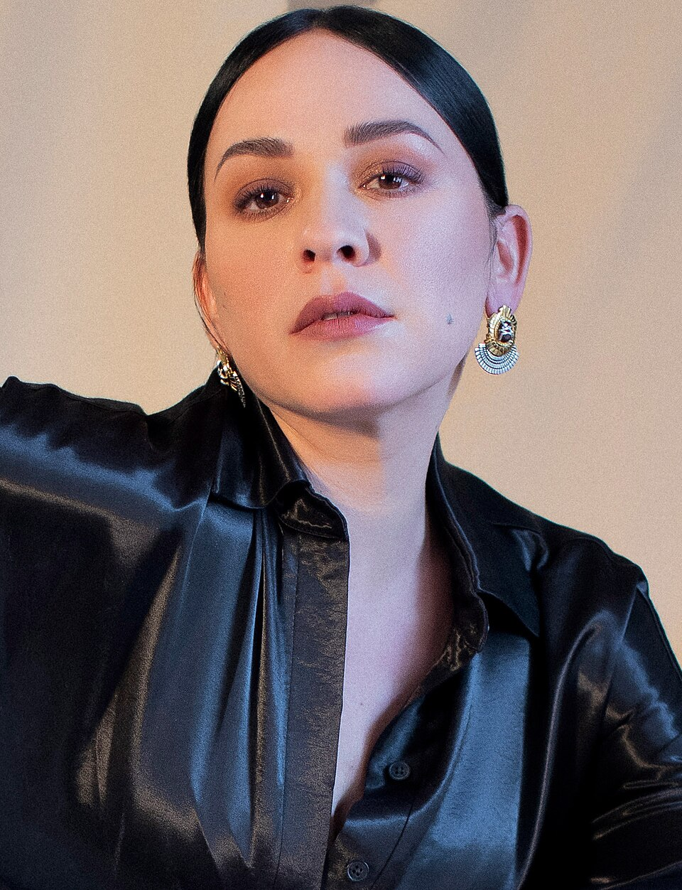
Cantante y compositora mexicana reconocida por su estilo dentro del pop alternativo.
DREM es un espacio digital creado para reconocer y visibilizar el trabajo de mujeres mexicanas dentro del mundo del arte.
A través de cinco disciplinas buscamos acercar al público a sus historias, trayectorias y diferentes formas de expresión artística.
Toluca, Estado de México
Instagram: @drem.artwoman’s
TikTok: @drem.artwoman’s
Facebook: DREM Arte